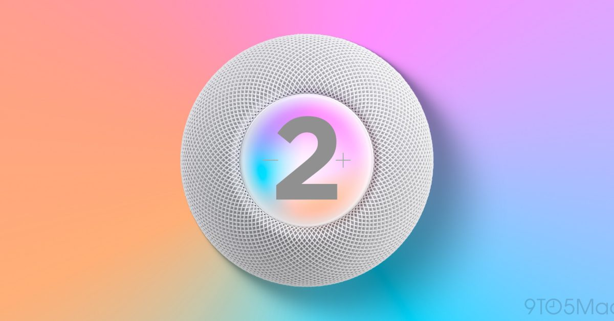
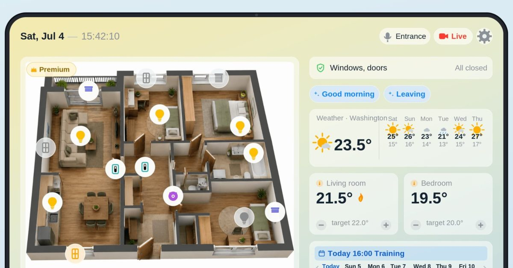
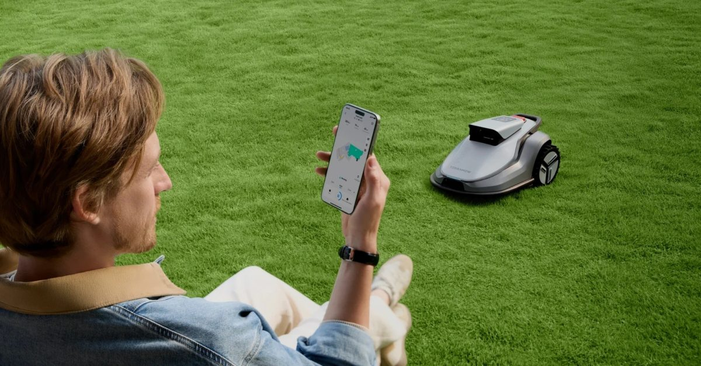
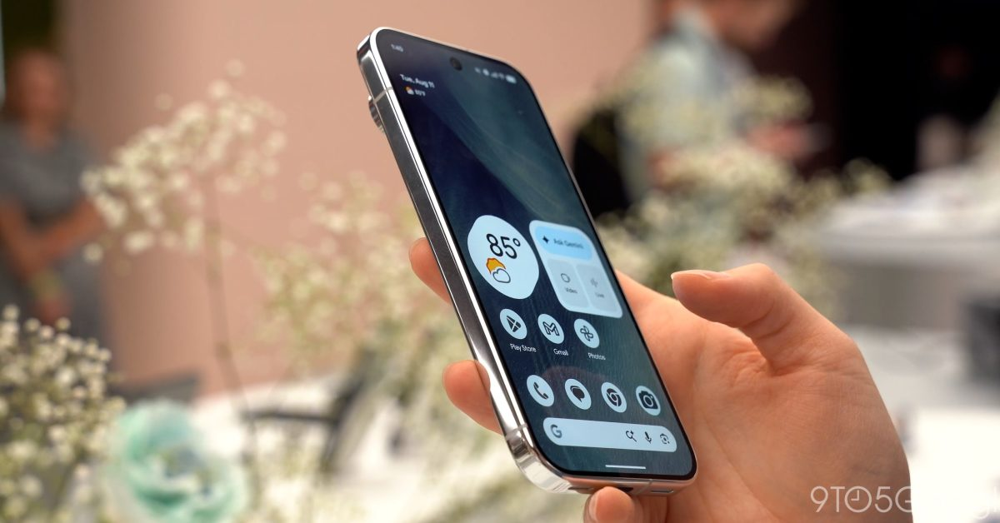
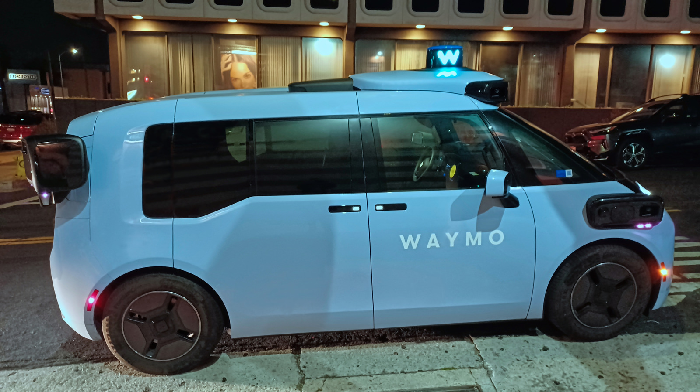

애플, 6년 만에 홈팟 미니 2세대 출시 준비
애플이 2020년 출시된 홈팟 미니의 후속 모델을 준비하고 있다는 보도가 나왔다. 스마트 스피커 라인업이 오랫동안 정체되어 있었던 만큼, 이번 리프레시는 애플의 홈 허브 전략 재가동으로 해석된다. 구체적 출시 시기와 사양은 아직 루머 단계다.

애플이 2020년 출시된 홈팟 미니의 후속 모델을 준비하고 있다는 보도가 나왔다. 스마트 스피커 라인업이 오랫동안 정체되어 있었던 만큼, 이번 리프레시는 애플의 홈 허브 전략 재가동으로 해석된다. 구체적 출시 시기와 사양은 아직 루머 단계다.

애플 홈 생태계 이용자들 사이에서 오래된 아이패드를 벽에 고정해 카메라, 온도조절기, 조명, 날씨, 일정을 한 화면에서 관리하는 홈 대시보드 앱 활용이 주목받고 있다. 별도 하드웨어 구매 없이 기존 기기를 재활용해 통합 제어 화면을 구성하는 트렌드로 풀이된다.

아이폰 앱으로 마당 지도를 그리고 제어하는 로봇 잔디깎이 테라모우 V1000이 기존 배터리형 제품을 대체할 만큼 편리하다는 리뷰가 나왔다. 최초 설정 후에는 정해진 일정에 따라 자동으로 작업을 수행해, 실외 영역까지 확장되는 스마트홈 자동화 기기의 사례로 꼽힌다.

구글이 픽셀 9 구매자에게 제공하던 12개월 무료 AI 프로 구독 혜택을 픽셀 11 시리즈부터 6개월로 줄이고, 기본 모델에는 무료 플랜 자체를 없앴다. 하드웨어 판매를 위한 AI 서비스 무료 제공 전략이 유료 전환을 유도하는 방향으로 조정되고 있음을 보여준다.
구글이 픽셀 11 시리즈 사전예약 고객에게 구글 홈 스피커나 픽셀 워치 5를 무료로 얹어주는 프로모션을 진행 중이다. 스마트폰 판매와 연계해 스마트 스피커·웨어러블 보급을 동시에 늘리려는 번들링 전략으로 풀이된다.

웨이모가 새크라멘토와 샌디에이고에서 자율주행 유상 운송 서비스를 제공할 수 있는 규제당국의 승인을 획득했다. 기존 샌프란시스코 베이 지역과 로스앤젤레스에서도 차량 운행 범위를 확대할 수 있게 되면서, 자율주행 기술이 일상 생활 반경으로 넓어지는 흐름을 보여준다.